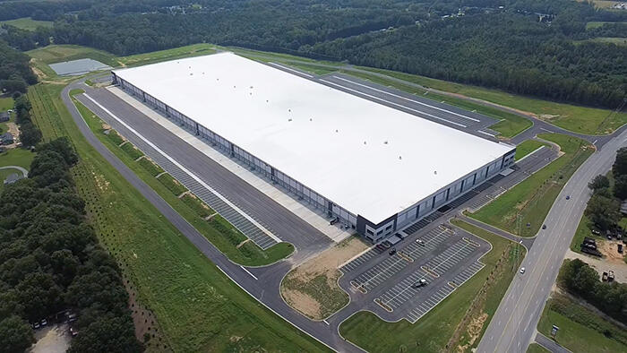

自律型トラック業界は今、転換点を迎えている。この数年間、業界はいくつかの大きな変革を経験してきた。企業の合併、方針転換、そして撤退——自律型トラックの技術的課題を解決するだけでなく、商業的な成功への道筋を切り開こうとしている業界において、それは驚くべきことではない。
業界は小規模な実証実験の黎明期から大きく前進しており、2025年が自律型トラックの未来を定義する重要な年になることは間違いない。Gatikは、幅広い市場・地域・運行条件のもとで複数のフォーチュン500企業の顧客との関係において、自社のミドルマイルソリューションの技術的な有効性とビジネスケースを証明してきた。Gatikは、米国とカナダの両国で収益を伴うドライバーレス配送を行った最初の自律型トラック会社であり、2019年以来200万件以上の商業注文を届けてきた。
Gatikは今、商業規模でのスケール化、ネットワーク高密度化、そしてソリューションの量産に向けた取り組みを進めている。AIドリブン自律走行の次世代をリードし、フレートオンリー（ドライバーレス）運行を本格的にスケールさせるためには、適切なパートナーが必要だ。
今週、Gatikはフレートオンリー車両の車群に次世代のDRIVE Thor SoC（システムオンチップ）を搭載したNVIDIA DRIVE AGXプラットフォームを導入・展開するため、NVIDIAとの協業を発表した。このパートナーシップは、ミドルマイルにおける安全で効率的な自律輸送ネットワークの商業化というGatikのミッションにとって重要なマイルストーンだ。Gatikの商業グレードの生産能力を強化し、ウォルマート、クローガー、タイソン・フーズ、ロブローを含む顧客向けのレベル4（L4）自律型トラックの展開を加速させる。Gatikはロジスティクスの在り方を再定義し、サプライチェーンに前例のない効率性をもたらし、将来の世代に持続的な経済的・社会的恩恵を創出していく。
AIの進歩により、安全最優先の自律走行技術の開発が加速しており、トラック輸送に依存する小売、食料品、eコマースなどの産業を変革しようとしている。NVIDIAの高速コンピューティングとAI技術によって、AIドリブン自律走行は世界中のコミュニティにとってより身近なものになっていくだろう。
DRIVE Thor SoCを搭載したNVIDIA DRIVE AGXは、次世代自動運転トラックのAI頭脳として機能する。グローバルな輸送市場向けに出荷が始まったこの車載グレードのDRIVE AGX Thorは、安全性が認証されたDriveOSオペレーティングシステム上で動作し、NVIDIA Blackwellアーキテクチャをベースとしている。DRIVE AGX Thorは毎秒1,000兆回以上の演算能力（TOPS）を有する高性能コンピューティングを実現しており、安全な自動運転トラックおよびその他の車両の大規模な開発・展開を可能にする。
この革新的なアーキテクチャは、Gatikのフレートオンリートラックを安全に展開し量産するために必要な、車載AI処理に不可欠なサポートを提供する。
NVIDIAとのGatikの協業は、いすゞ北米法人（Isuzu North America Corporation）との既存の長期パートナーシップを土台としている。いすゞとGatikは2021年から自律型トラックの北米大陸における開発加速に向けて協業してきた。2024年には、GatikとIsuzu（いすゞ）は、フレートオンリー運行に必要な完全な検証を含む、堅牢かつ安全性重視の冗長システム（ブレーキ、ステアリング、センサー、ソフトウェアを含む）を備えたSAE L4自律型トラックの設計・開発・製造を共同で進めることに合意した。Gatikのいすゞ製中型車両の車群には、Gatikの業界をリードする自律走行技術とNVIDIA DRIVE AGXが搭載されており、Gatikの顧客基盤に向けてフレートオンリー運行を安全にスケールさせる。
最近、いすゞはサウスカロライナ州に新たな生産施設を設立することを発表した。2027年に稼働予定のこの施設は、2030年までに年間約5万台の生産能力を持つことが見込まれており、次世代の自律・コネクテッド・カーボンニュートラルなソリューションの幕開けを告げる。この施設は、電動または内燃機関の商業車両に対する顧客需要の変化に効率的に対応できる、可変モデル・可変量の生産システムを導入する予定だ。

いすゞとのパートナーシップは、OEMと自律走行パートナーがL4対応トラックの量産を共同で実現することを約束した初めての事例だ。これは業界他社のR&Dフェーズを大きく超えた重要な一歩であり、Gatikが顧客のニーズを迅速かつ安全に、そして大規模に満たせるようにするものだ。
NVIDIAとIsuzu（いすゞ）とのパートナーシップは、最高水準の安全性とパフォーマンスへの揺るぎないコミットメントによって定義されている。いすゞは1世紀以上にわたって中型トラック生産のグローバルリーダーであり、NVIDIAは自動運転車分野における高性能コンピューティングの代名詞としてAIチップ業界を再定義してきた。安全・信頼・大量生産という原則のもとで築かれたこの両社との協業によって、Gatikは人々が生活必需品や愛するブランドを受け取る方法を革新する自律型ソリューションを構築している。
2025年、Gatikは安全で高性能なフレートオンリートラックの大規模量産というコミットメントを実現しつつある。フォーチュン500の顧客基盤は、より高頻度の配送、より手頃な価格での自宅近くへの商品提供を求める消費者の切迫した需要に対応するため、自律走行へと舵を切っている。こうした需要に応えるには、自律走行は単に有益なものではなく、不可欠なものだ。北米だけで2,500億ドル規模のミドルマイル市場は、破壊的変革の機が熟している。このロジスティクスセグメントに専念することで、Gatikは顧客の自律輸送ネットワーク拡大を安全・確実・効率的に支援する最適なポジションにある。2025年のGatikから目を離さないでほしい——まだまだ多くのことが待ち受けている。